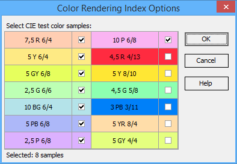
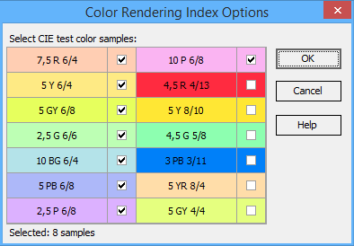

Color Rendering Index Options
Select a subset of color samples used in the evaluation of the Color Rendering Index (CRI). The approximate colors of the samples, along with their corresponding Munsell notations, are presented.

Select a subset of color samples used in the evaluation of the Color Rendering Index (CRI). The approximate colors of the samples, along with their corresponding Munsell notations, are presented.
